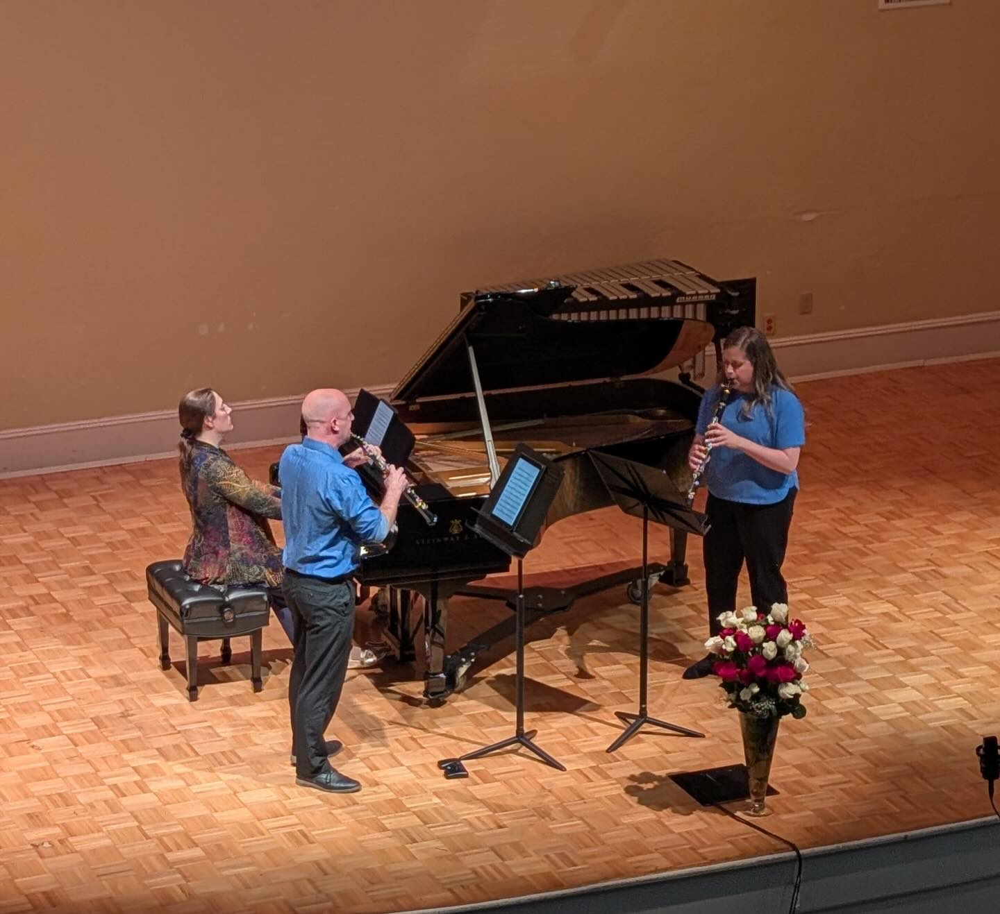

Skip to Main Content
Kaibab Trio
Shane Werts, oboe | Kelsi Doolittle, clarinet | Aimee Fincher, piano
HOME
ABOUT
MEDIA
RESOURCES
CONTACT
Media
Legacy Concerto – Shane Werts
Shane Werts performs excerpts from Legacy Concerto by Oscar Navarro.
Poulenc Sextet — Kelsi Doolittle
First movement of Poulenc’s Sextet for piano and wind quintet.
Lucas’s Garden — Amanda Harberg
Kelsi Doolittle performs in the world premiere of Amanda Harberg’s Lucas’s Garden, alongside fellow New World Symphony members.
Photo & Recording Link

A moment from the recital at the Music by Women Festival, March 2026.
Youtube of Ruth Gipps' Trio Performance
.